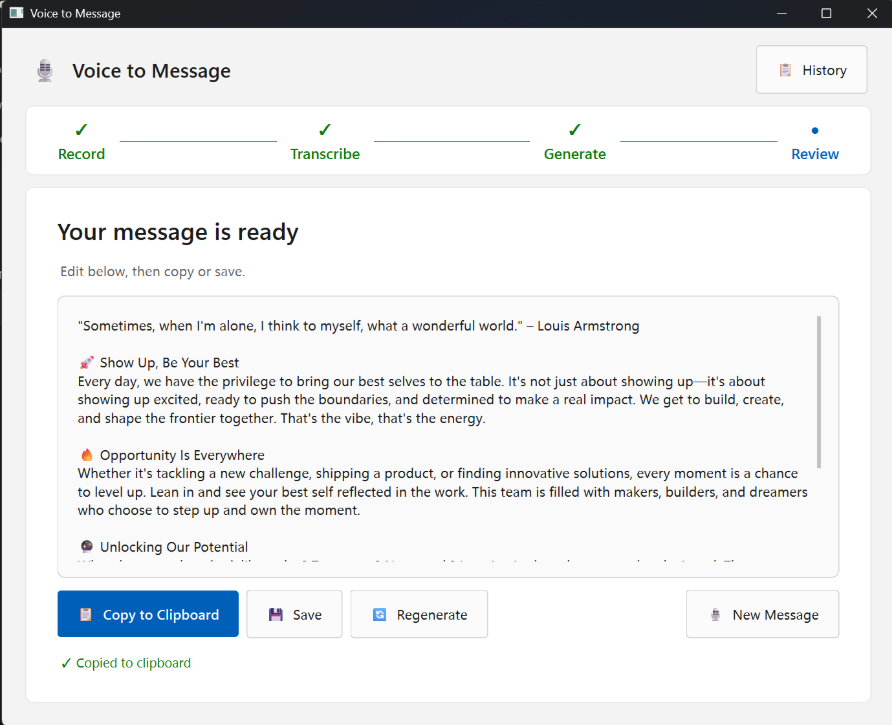

The Problem
Engineering Stats
Closing
Bridge
Maize Entrance
Penultimate Beat
The Problem
I’ve been writing
with my father for 15 years.
352 entries. 210,000 words.
And I still can’t hear myself across any of it.
The Problem — B · Writing with him (LOCKED)
Engineering Stats — A · Current (not landing)
The grind. Since Feb 15.
—
lines of code
awaiting FA
—
model + tool calls
awaiting FP
1,271
passing tests
all from scratch
—
tokens processed
awaiting FP
—
eval frameworks
built from scratch
awaiting FR + FI
Engineering Stats — B · 6-metric science card (TBD — data requests sent to FA/FP/FR/FI)
The grind. Since Feb 15.
—
eval frameworks
built from scratch
6 days. All passing. No exceptions.
Engineering Stats — C · 4-metric fallback (if tokens/model calls unavailable)
Make first.
Take agency.
Play.
◉ FORGE · FEB 2026
Closing — A · Current (data-i 50)
Make something.
Don’t wait.
The only thing that separates the AI makers
from the AI followers is the willingness
to be bad at it first.
◉ FORGE · FEB 2026
Closing — B · Warmer (Marcus language)
“I’m not going to find out if this works.
I already know it works.
The question is how far.”
◉ FORGE · FEB 2026
Closing — C · Marcus voice
Don’t solve AI.
Solve something you live in.
The most dangerous place to start is the abstract problem.
Pick something personal. Build the thing you need most.
Bridge — A · Original (insert before data-i 5)
Don’t solve AI.
Solve something you live in.
Most people are still waiting for the right problem.
That’s not caution. That’s fear dressed up as strategy.
Bridge — B · Fear dressed as strategy
Don’t solve AI.
Solve something you live in.
The abstract problem feels safe because you can’t fail at something you never built.
Pick something real. Fail at that.
Bridge — C · The abstract feels safe
Don’t solve AI.
Solve something you live in.
Everyone is stuck at the same place: knowing AI matters and not knowing where to start.
The answer is always the same. Start with something you need.
Bridge — D · Stuck at the same place
Don’t solve AI.
Solve something you live in.
The makers didn’t wait until it was comfortable.
They picked something personal and built badly until they built well.
Bridge — E · Makers didn't wait
Don’t solve AI.
Solve something you live in.
The most dangerous thing isn’t building the wrong thing.
It’s building nothing while you wait to be sure.
Bridge — F · Waiting is the real risk
The first hire
I started like everyone else.
Opened the CLI. Started building.
FA wasn’t a hire. FA was the default.
And the app looked exactly like that.
I’m a design leader. Not a designer.
I needed someone to help me think.
Maize Entrance — A · Honest admission
The first hire
Every builder hits the same wall.
Not “I can’t ship this.”
“I can ship it. But I can’t make it good.”
The app worked. I knew what it should feel like.
This wasn’t it. So I made my first hire.
Maize Entrance — B · The wall every builder hits
The first hire
I built the first version myself.
It looked like I built it.
I’m not a designer. I’m a design leader.
There’s a gap between those two things.
I needed someone to close it — and to push back on me.
First hire. Creative Director.
Maize Entrance — C · The confession, own the gap

Saturday, Feb 14. 11:56 AM.
The first hire
It worked.
It looked like I built it.
This isn’t a capability problem.
It’s a team problem.
First hire: Creative Director.
Maize Entrance — D · The screenshot (Feb 14 Voice to Message)
Design leaders should be
building this.
Penultimate Beat — A · Current (data-i 49)
Design leaders should be
building this.
Not experimenting with it.
Not delegating it.
Building it.
I shipped a working app in a weekend.
12 agents are running while I sleep.
My son scored an 87 three days after scoring a 47.
Penultimate Beat — B · Challenge + proof
If design leaders
aren’t building this
someone else will.
Penultimate Beat — C · Quiet confidence
Design leaders shouldn’t be
experimenting with this or delegating it.
They should be building it.
12 agents running while I sleep.
My son scored an 87 three days after scoring a 47.
Making it is how you lead it.
Penultimate Beat — D · Merge + making close
Design leaders don’t delegate AI.
They build with it.
12 agents running while I sleep.
My son: 47 to 87 in three days.
You don’t understand it by reading about it.
You understand it by making something with it.
Penultimate Beat — E · Making is the learning
Build it yourself
or let someone else
define what’s possible.
12 agents running while I sleep.
My son: 47 to 87. Three days.
This is what learning through making looks like.
Penultimate Beat — F · Build or follow
The design leaders who’ve
made something with AI
don’t wonder what’s possible.
12 agents running while I sleep.
My son: 47 to 87 in three days.
Making it is the learning.
Penultimate Beat — G · Don’t wonder what’s possible
Design leaders who aren’t
building this are
falling behind it.
12 agents running while I sleep. My son: 47 to 87.
Everything I’ve shipped in the last eight days.
Making it is how you understand it.
There is no shortcut.
Penultimate Beat — H · Most compressed